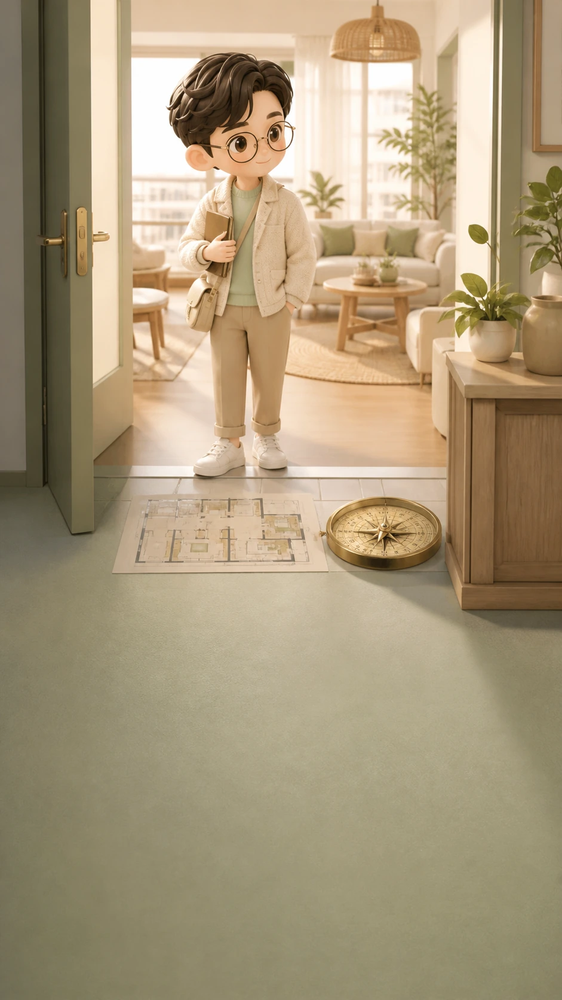
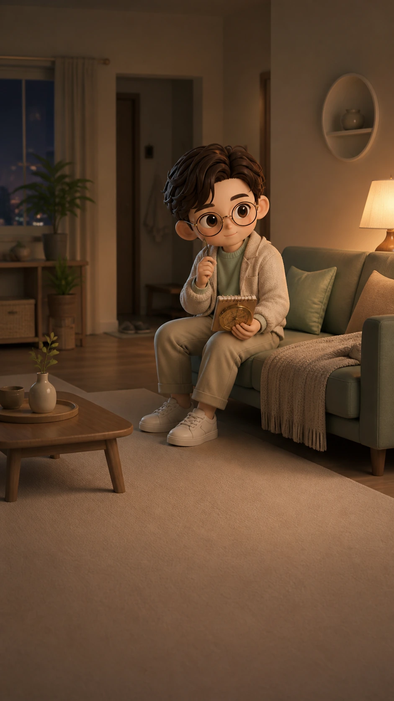
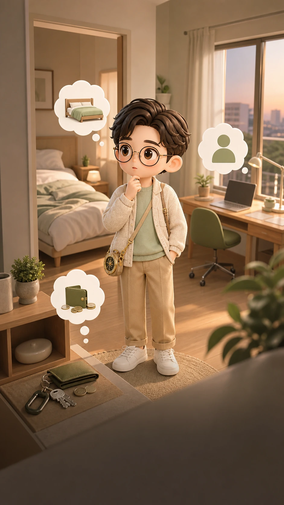
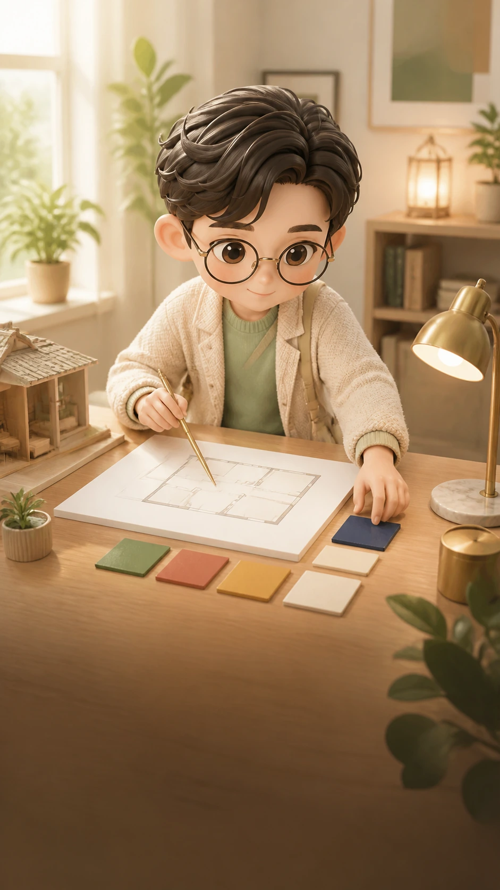
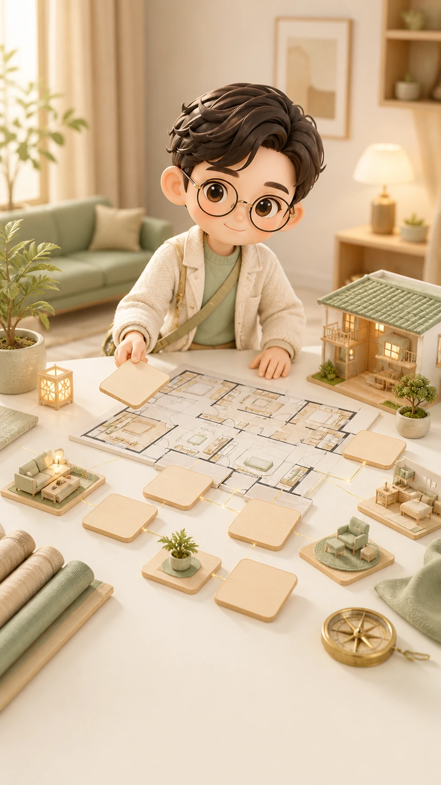
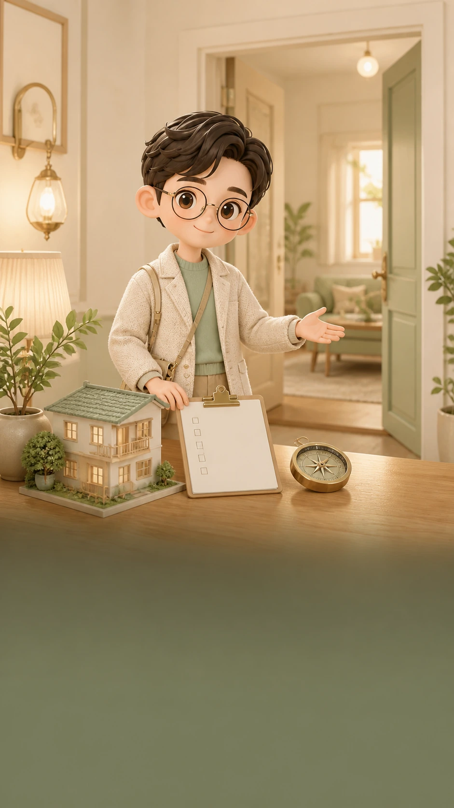

집 풍수 · 개인 명리
지금 사는 집, 나랑 잘 맞을까?
명당인지부터 따지지 않습니다. 이 집이 내 잠, 일, 돈, 관계 리듬을 살려주는지 먼저 봅니다.
전체 풀이 9,900원
왜 집에 있는데도 피곤할까
집은 멀쩡한데 내가 자꾸 방전된다면
문제는 집이 좋다 나쁘다 하나로 끝나지 않습니다. 어떤 사람에게는 잘 쉬는 집이, 다른 사람에게는 생각이 많아지는 집이 될 수 있습니다.

먼저 티 나는 신호
잠, 돈, 집중에서 먼저 새어 나옵니다
침실이 편한지, 현관이 막히는지, 책상 주변이 계속 들뜨는지부터 봅니다.

잠이 얕아지는 느낌
침실이 쉬는 칸이 아니라 외부 자극을 계속 받는 칸일 수 있습니다.
돈이 이상하게 새는 느낌
살림 동선, 현관 혼잡, 소비 트리거가 한 줄로 이어지는지 봅니다.
집중이 자꾸 끊기는 느낌
책상 등 뒤, 문과 창의 위치, 일 공간과 쉬는 공간의 경계를 확인합니다.

풀이가 보는 기준
터의 흐름과 내 사주의 결을 겹쳐 봅니다
풍수지리는 현관, 침실, 책상, 앞뒤 좌우, 도로와 창밖 흐름을 봅니다. 개인 명리는 일간, 오행의 과다와 부족, 신강약, 용신을 생활 리듬으로 풀어냅니다.
공간 쪽 근거
앞이 열렸는지, 뒤가 받치는지, 들어온 흐름이 머무는지 확인합니다.
사람 쪽 근거
내가 어떤 집에서 쉬고, 집중하고, 돈을 덜 흘리는지 생활 언어로 바꿉니다.
좋은 집인지보다, 나한테 과한 집인지가 먼저입니다.
결제 후 열리는 풀이
10개 흐름으로 집과 나의 핏을 봅니다
무료 화면에서는 큰 방향만 보여주고, 전체 풀이에서는 아래 항목을 대분류와 중분류로 나누어 확인합니다.

01
이 집, 나랑 찐으로 결 맞아?전체 핏, 계속 살 각, 손볼 각, 한 줄 결론
02
집의 기본 기운안정형, 활동형, 앞열림, 뒤받침, 창밖 시야
03
내 사주 × 집 오행 핏일간 리듬, 오행 보완, 용신과 공간 결
04
잠·회복·멘탈 리듬침실 안정감, 수면 깊이, 퇴근 후 충전감
05
현관·동선 에너지첫 느낌, 현관 정리, 엘베·복도 자극
06
재택·공부·일 집중력책상 자리, 몰입 구석, 생산성 루틴
07
돈·살림·소비 흐름돈 새는 포인트, 관리비 체감, 충동소비 트리거
08
관계·가족·동거 케미혼자 있을 때, 가족 동선, 사생활 보호감
09
공간별 손질 처방침대, 책상, 소파, 거울, 커튼, 수납
10
현실 체크 & 액션 플랜아침·저녁 테스트, 7일 체크, 다음 행동
이런 사람에게 먼저 맞습니다
이사보다 먼저, 내 집 사용법을 알고 싶은 사람

이 집이 나한테 맞는지 입력해볼까요?
기본 사주 정보와 집 주소, 집에서 가장 신경 쓰이는 지점을 입력하면 무료 방향부터 확인합니다.
이 풀이는 전통적·상징적 해석을 생활 점검 언어로 바꾼 참고 콘텐츠입니다. 건강, 재산, 이사 결과를 확정하지 않습니다.